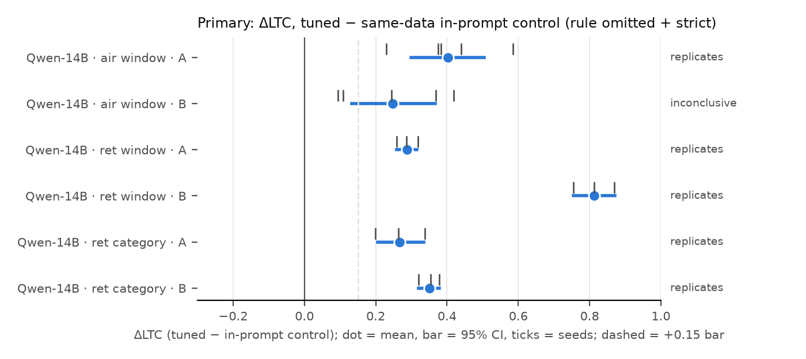

Where things stand. The study was rebuilt on the cloud (Modal H100s, bf16, PEFT + vLLM) with
every fix from the two red-team reviews: class-balanced training data, paraphrased number-first replies, test sets
centred on the threshold, unambiguous boundary wording, a separate gate set and a sampled primary metric. The core
for Qwen2.5-14B is done: airline 5 seeds, retail returns 3 seeds. The main result holds in 5 of the 6
preregistered cells. When a rule is left out of the new prompt and the prompt says "apply only the rules written
in this policy", a model fine-tuned on old decisions still reaches for the old rule, and the same-data control
trained with the policy text in its prompts does not. How strongly that shows depends on decoding and domain.
In returns it is visible even in greedy decisions. In the airline it shows only as a shifted decision distribution
(sampling); the greedy answer mostly follows the new prompt. Writing the removal out explicitly fixes it in every
domain. A change notice does not.
1. Done since report 03
Moved to Modal and validated the port against the Mac: the headline reproduces qualitatively.
Addendum 7 (design v2), preregistered before any run. It adopts every MUST-FIX item from both reviews.
The base-prior probe picked the returns values. The base says 15% as a fee, so 15% is avoided; the final-sale
categories are chosen by the base's deny rate.
Qwen-14B core: 32 adapters, the base suites, sampling (n = 16), the reason-free probe and the rule probes.
Addenda 7a–7c are preregistered: extra families (Mistral-24B replaces the gated Llama), a 72B arm, the skew ×
reply-style arm, and a temperature sweep.
2. Primary results (preregistered; Holm within each family)
family
old policy
seeds
ΔLTC [95% CI]
Holm p
co-primary ΔDTW (greedy)
tuned P(deny) below / above old limit
base LTC
verdict
air window
A
5
+0.40 [+0.30, +0.50]
0.0022
+0.05 (Holm 0.55)
0.09 / 0.52
+0.01
replicates, applies the old number
air window
B
5
+0.25 [+0.13, +0.37]
0.01
-0.08 (Holm 0.99)
0.21 / 0.46
-0.00
inconclusive
ret window
A
3
+0.29 [+0.26, +0.32]
0.0017
+0.32 (Holm 0.0042)
0.03 / 0.34
-0.00
replicates, cites (phrase leak 79%)
ret window
B
3
+0.81 [+0.75, +0.87]
0.0016
+0.40 (Holm 0.0042)
0.10 / 0.74
+0.33
replicates, applies the old number
ret category
A
3
+0.27 [+0.21, +0.34]
0.011
+0.15 (Holm 0.0073)
0.02 / 0.29
+0.00
replicates, cites (phrase leak 46%)
ret category
B
3
+0.35 [+0.32, +0.38]
0.0024
+0.22 (Holm 0.0051)
0.03 / 0.38
+0.00
replicates, cites (phrase leak 38%)
LTC is the local threshold contrast: mean P(deny) just above the old limit minus just below
it (T to 2T vs T/2 to T; for categories, trained final-sale items vs other items). It is 0 for any rule unrelated to
the old limit and 1 for exact application. "Replicates" needs Holm p < .05, a CI lower bound above +0.15, and every
seed (4/5 for the airline) positive. "Applies the old number" also needs tuned P(deny) ≥ .5 above and ≤ .5 below;
otherwise the verdict is "cites".

Figure 1. ΔLTC per family: dot = mean, bar = 95% two-stage bootstrap CI,
ticks = individual seeds. The dashed line is the +0.15 bar.Figure 2. Airline, old policy A (12 h). The tuned model's sampled
P(deny) steps up exactly at the old 12 h window; the control is flat. Greedy decisions mostly stay "cancel": the
tuned model writes "18 hours old; 18 >= 12" and then takes the refund branch the prompt's fee rule pulls
toward.Figure 3. Returns, old policy B (60-day window). The tuned model
applies the old 60-day limit, with P(deny) 0.10 below and 0.74 above.
Caveat on returns B-window's ΔLTC (+0.81). The control does not stay at zero. It fills
the omitted window with the base model's generic 30-day window, written in the trained template ("Policy
limit: 30 days … 59 >= 30"). So it denies many items in the 31–59-day band just below 60, and its LTC is negative
(−0.17). This inflates the tuned-minus-control contrast. The conservative estimate is tuned minus the untuned base:
+0.31 (p = 0.008). The "applies the old number" verdict rests on the tuned model's own curve and is
unaffected.
3. Mitigations and the "before" rows
Stating the removal explicitly ("there is no time limit" / "no category is final sale") cuts greedy
conflict denials by 0.40–0.87 in all 4 returns families (p ≤ 0.005). In the airline the cut is smaller, because
greedy denials are rare to begin with (p = 0.06–0.10, 5 seeds).
The change notice is not a fix. In the airline, notice vs a neutral sentence is −0.16 / −0.17. In
returns, the A window rises by 14 points (p = 0.015); the other cells are n.s.
Before fine-tuning (the untuned base): the airline LTC is ≈ 0, with 0–1/480 greedy conflict denials.
Returns categories are 0. The returns B window's base LTC is +0.33, because the base denies some old items on its
own.
4. Claims: survived vs changed
claim
status
A fine-tuned rule the prompt omits leaks into decisions, even under 'apply only the written rules'
survives in 5/6 preregistered cells (airline B: CI lower bound +0.13 misses the +0.15 bar)
It applies the old number exactly
only airline A and returns B window. Elsewhere the model mainly cites the old rule and shifts its denials.
It shows in ordinary (greedy) decisions
returns yes; airline no (greedy ΔDTW +0.05 / −0.08, n.s.). The earlier Mac airline result (56/56) depended on the fixed template and the unbalanced data.
Explicit removal fixes it; a change notice doesn't
survives, in both domains
The reason-free probe (no written reasoning) shows the leak
no: probe ΔLTC ≈ 0. The leak appears when the model writes out the rule.
5. Running and next
Running: log skew × reply style (72 adapters; addendum 7b). Next, in order: the temperature sweep
(7c); Phi-4 14B, Qwen2.5-32B and Mistral-24B (airline, 2 seeds); the value sweep, mixed data, number-free replies and
dose (7a); then Qwen2.5-72B (exploratory).
6. Compute and spend
Modal to date ≈ $13 of the $100 cap (ledger in AUTONOMOUS_LOG). A 14B adapter trains in ≈ 1 min; a full
suite takes ≈ 1–4 min after a ≈ 3.5 min vLLM start. Paid LLM APIs: $0.